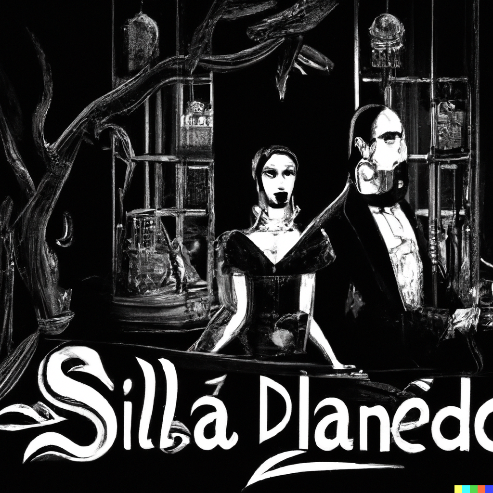

En los callejones olvidados de Lusuriaga, se rumoreaba la existencia de un ladrón legendario conocido como "El Fantasma". Nadie había visto su rostro, solo se escuchaban los susurros de sus hazañas nocturnas. Una noche, durante un robo audaz en una mansión opulenta, El Fantasma se encontró con una joya invaluable. Pero esta no era una joya común, sino la llave de acceso a los secretos más oscuros de Lusuriaga. Con cada robo, El Fantasma iba descubriendo los hilos invisibles que controlaban el destino del barrio. A medida que profundizaba, se enfrentaba a las fuerzas corruptas y poderosas que habían convertido a Lusuriaga en un nido de violencia y desesperanza. El Fantasma se convirtió en un vigilante silencioso, robando a los ricos para devolver algo de justicia a los desfavorecidos. Cada noche, Lusuriaga se sumergía en el caos mientras la balada del ladrón silencioso resonaba entre los callejones estrechos y las vidas rotas. Aunque Lusuriaga nunca conocería el nombre del ladrón que desafió al poder establecido, su legado perduraría como un símbolo de resistencia en un barrio atrapado en las garras de la oscuridad.
